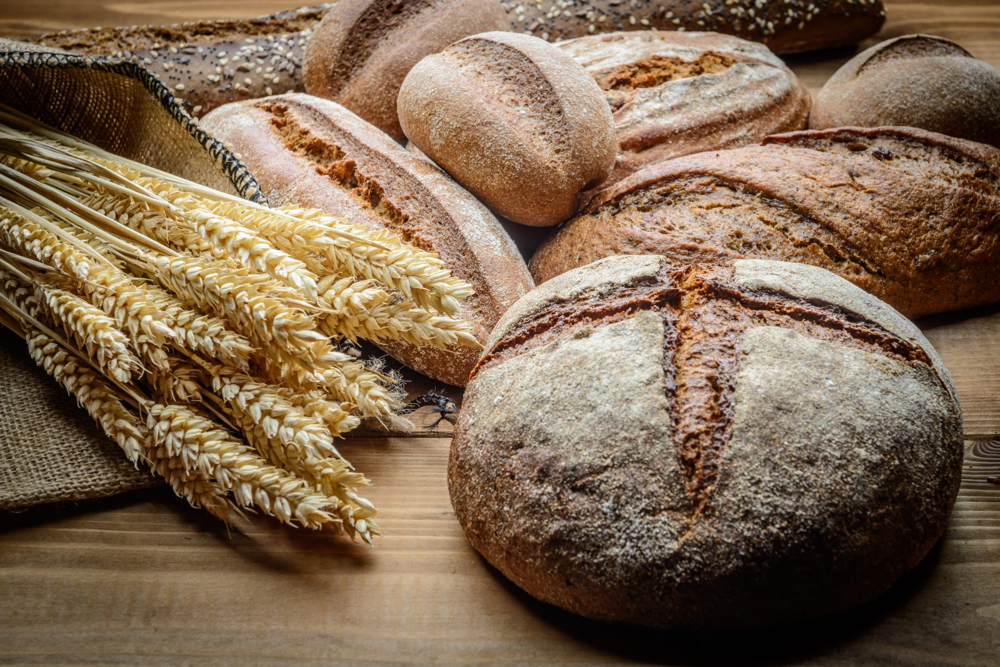
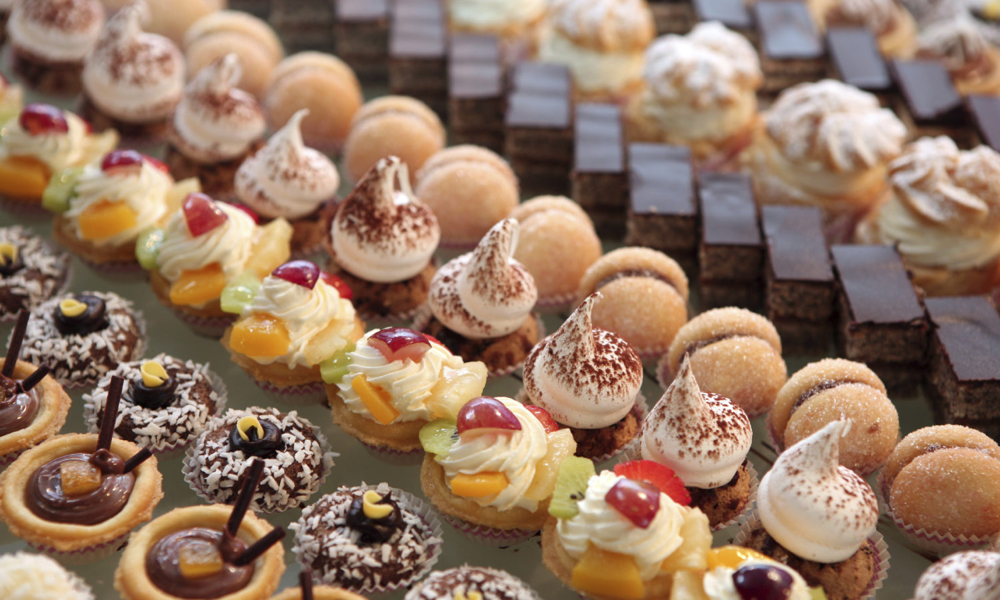
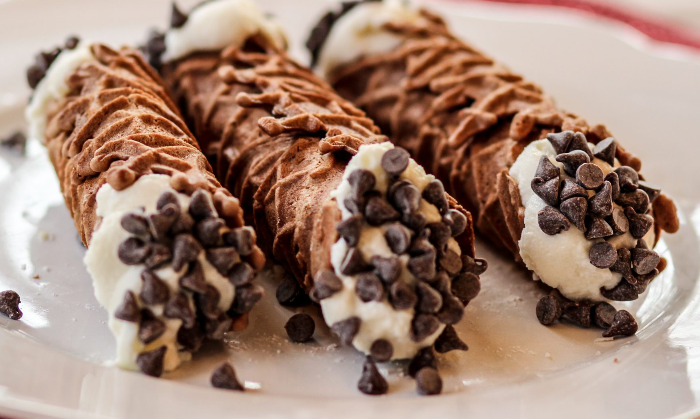
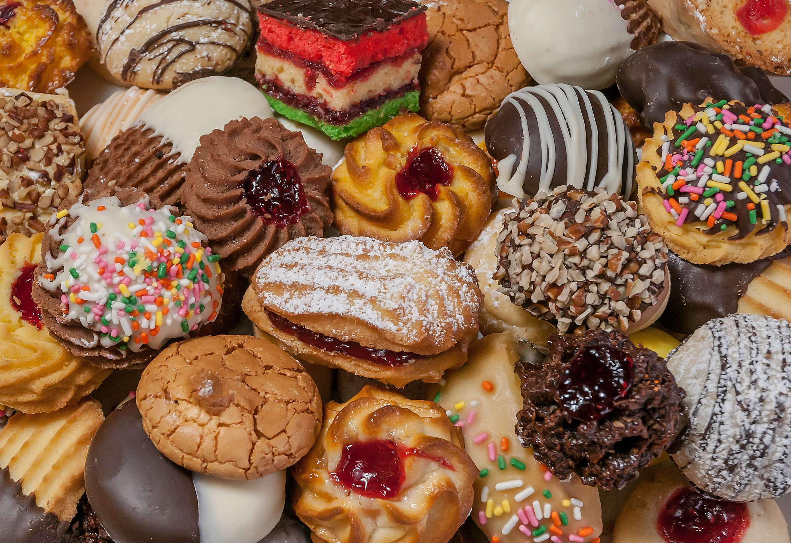

Menu
Breads
-
Focaccia
A light and airy flatbread with a crispy crust and a soft, chewy interior. Topped with olive oil and sea salt.
$4.99
-
Ciabatta
A classic Italian bread made with a combination of wheat flour and yeast, known for its crispy crust and soft, airy interior.
$5.99
-
Pane Pugliese
A rustic, round bread originating from Puglia, Italy. Made with durum wheat flour and a sourdough starter, this bread has a thick crust and a dense, chewy crumb.
$4.99
-
Focaccine
Miniature versions of focaccia, these small, round breads are perfect for appetizers or as a snack. They can be topped with a variety of ingredients, such as olives, sun-dried tomatoes, or cheese.
$4.99
-
Grissini
Also known as breadsticks, these thin and crispy sticks are made from a simple dough of flour, water, yeast, and salt. Perfect for snacking or as an accompaniment to soups and salads.
$6.99
-
Pane Siciliano
A traditional bread from Sicily, Italy, made with semolina flour and yeast. It has a golden, crispy crust and a soft, slightly sweet interior. Perfect for sandwiches or to accompany meals.
$5.99
Pastries
-
Tiramisu
A beloved dessert made with layers of espresso-soaked ladyfingers and a rich mascarpone cream, topped with cocoa powder or grated chocolate.
$5.99
-
Sfogliatelle
A shell-shaped pastry with flaky, layered pastry dough filled with a sweet ricotta cheese filling flavored with candied citrus peel and cinnamon.
$6.99
-
Bigne
Small, cream-filled pastries made from choux pastry, typically filled with vanilla or chocolate pastry cream and dusted with powdered sugar.
$4.99
-
Pasticcini
An assortment of bite-sized pastries, often filled with almond paste, jam, or chocolate, and coated in powdered sugar or chocolate.
$4.99
-
Crostata
A classic Italian tart made with a shortcrust pastry base and filled with jam, custard, or fresh fruit, often topped with a lattice crust or crumbly streusel topping.
$5.99
-
Zeppole
A fluffy doughnut-like pastry filled with sweet custard and dusted with powdered sugar.
$6.99
Cannoli
-
Traditional Cannoli
A classic cannoli filled with sweetened ricotta cheese, chocolate chips, and candied orange peel, all wrapped in a crispy, fried pastry shell.
$5.99
-
Pistachio Cannoli
A twist on the traditional cannoli, filled with sweetened ricotta cheese and chopped pistachios, and dusted with powdered sugar.
$6.99
-
Chocolate Cannoli
A chocolate lover's dream, filled with sweetened ricotta cheese and chocolate chips, and coated with a rich chocolate drizzle.
$5.99
-
Lemon Cannoli
A tangy and refreshing option, filled with sweetened ricotta cheese and a touch of lemon zest, and dusted with powdered sugar.
$5.99
-
Amaretto Cannoli
A nutty and aromatic cannoli, filled with sweetened ricotta cheese and amaretto liqueur, and rolled in crushed amaretti cookies.
$6.99
-
Espresso Cannoli
A coffee lover's delight, filled with sweetened ricotta cheese and espresso, and coated in a creamy coffee-infused frosting.
$6.99
Cookies
-
Biscotti
A classic Italian cookie that is twice-baked to create a crispy, crunchy texture. Typically made with almonds, these cookies are perfect for dipping into coffee or tea.
$3.99
-
Amaretti
Small, chewy cookies made from almond paste and flavored with bitter almond extract. These cookies are often served alongside espresso or other after-dinner drinks.
$3.99
-
Brutti ma Buoni
A simple, rustic cookie made from meringue and chopped hazelnuts. These cookies have a crisp exterior and a soft, chewy interior.
$4.99
-
Pizzelle
Thin, crisp cookies that are made using a special iron with intricate designs. These cookies are often flavored with anise or vanilla and are perfect for snacking.
$3.99
-
Ricciarelli
A soft, almond-based cookie that is flavored with orange zest and dusted with powdered sugar. These cookies have a delicate, crumbly texture and are often served during the holidays.
$4.99
-
Taralli
A savory cookie made from a dough that is boiled, then baked until crisp. These cookies are often flavored with fennel or black pepper and are a popular snack in southern Italy.
$4.99